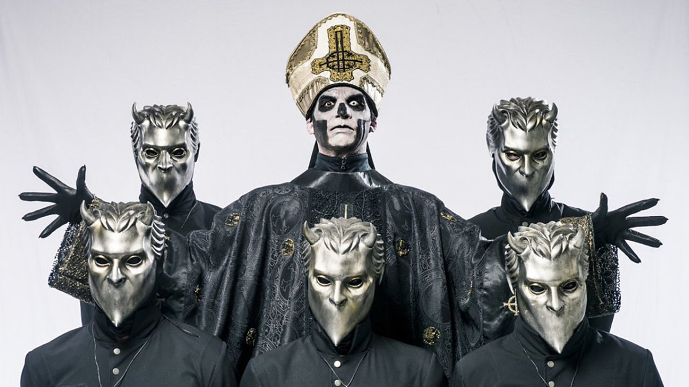

Ghost
Ghost es una banda sueca de rock, formada en Linköping, Suecia en 2006. En el año 2010 lanzaron un demo de tres canciones, seguido por el sencillo en vinilo de 7" «Elizabeth» y más tarde por su álbum debut Opus Eponymous. Este último recibió principalmente críticas positivas y ayudó a aumentar de manera considerable la popularidad del grupo, además de ser nominado a los Grammis (mayor distinción otorgada a la música en Suecia). Su segundo álbum de estudio, Infestissumam, fue publicado en 2013, debutó en el número 1 en Suecia y ganó el Grammis por mejor álbum de Hard Rock/Metal. La banda publicó su tercer álbum de estudio, Meliora, en 2015, el cual tuvo muchísimas críticas positivas y alto índice de ventas, lo cual lo provocó que este alcanzara el número 1 en su país natal y el número 2 en los Estados Unidos, además darle a la banda su primer Grammy estadounidense. A principios de abril del año 2017, se publicó que los "Nameless Ghouls (Gul sin nombre)" se encontraban demandando al Papa Emeritus (Tobias Forge) por mal uso de repartición de regalías.Su cuarto álbum de estudio se publicó en el año 2018, este fue titulado «Prequelle». En septiembre de 2019 sale a la luz el EP titulado Seven Inches of Satanic Panic, con dos temas titulados Kiss the go-goat y Mary on a Cross. Su último álbum hasta la fecha se lanzó en el 2022, este fue titulado "Impera". Ghost es fácilmente reconocible por su excéntrica presentación en directo. Cinco de los seis miembros de la banda se visten virtualmente idénticos y cubren sus caras con máscaras. El miembro más destacable de la banda es el vocalista, el cual viste una cara protésica con el dibujo de una calavera, pareciendo lo que se podría describir como un "Antipapa demoníaco". Cada ciclo de álbum ha traído un cambio en la apariencia de la banda. El vocalista siempre retrata el mismo arquetipo de personaje, pero ha tenido leves cambios de apariencia e incluso algunos rasgos de su personalidad han cambiado desde las versiones anteriores.
